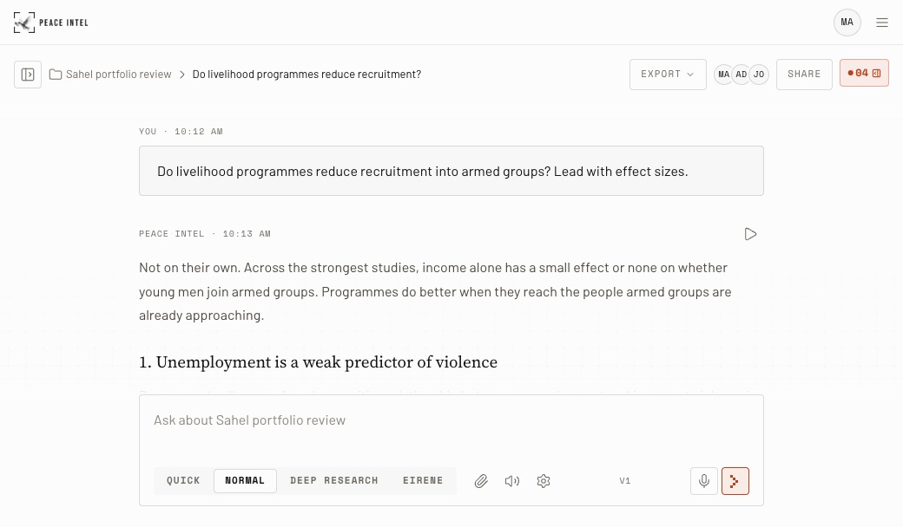

Peace Intel · Brand board · Rev. 22 · Exploration
The full reference
The dove in its focus brackets, beside the name. Always the image, never typed.
Clear evidence for consequential decisions.

The dove alone above 24px; the empty brackets below it, as the favicon.
PaperGroundInkOrange
In proportion, from the most surface to the least: paper, a ground that sets back, ink, and one accent for what you can act on and what cites.
Source Serif 4, set light, for what is read as a headline. Barlow for what is read at length.
Space Mono for labels and readings


Places, in the dither, named and dated. A street in Mosul’s Old City, 2019. Photograph: Levi Clancy, CC0.

What the evidence says about local mediation
A report cover and an event badge: the logo, one label, a serif title, one figure.
●1◐2↗3every claim carries its tier
Request access
Citations by tier, choices in a tray, one action in the accent.